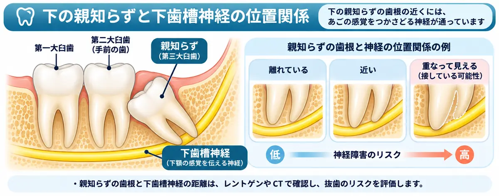
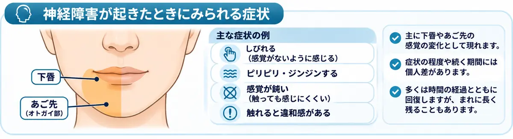
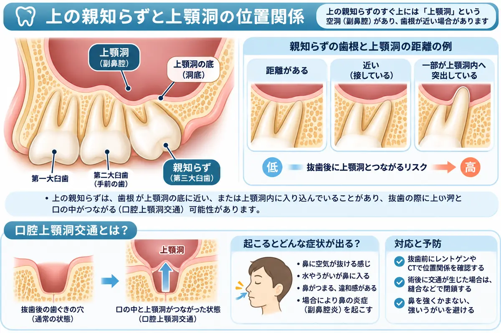
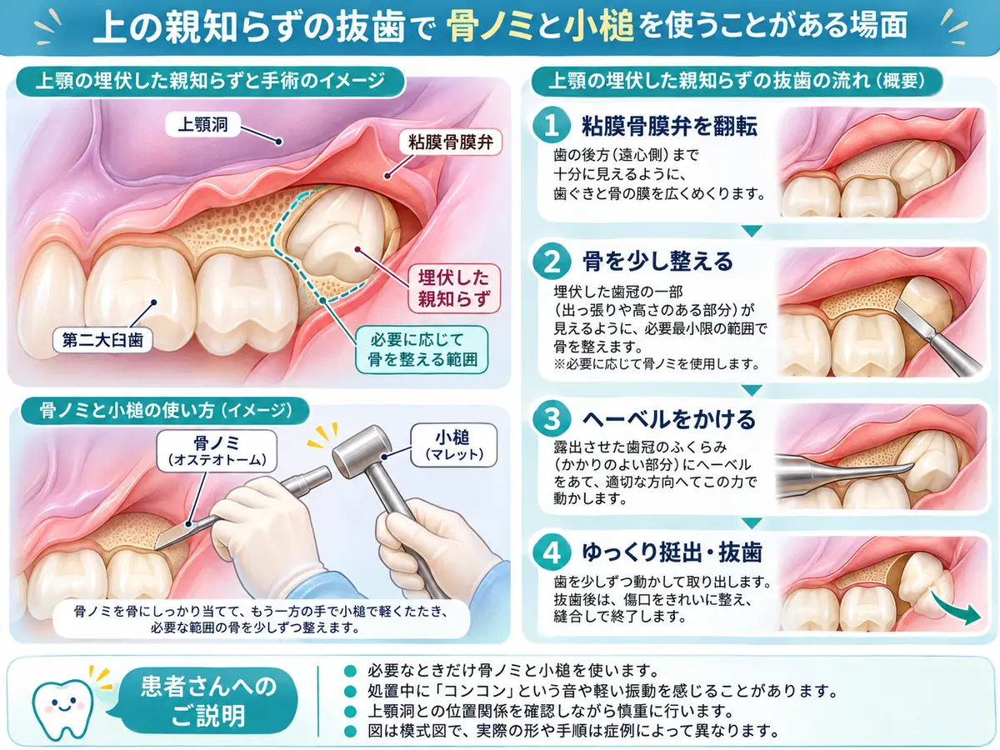

「親知らずは早めに抜いた方がいいと言われた」「痛みがないのに、わざわざ抜く必要があるの？」と疑問に思う方は多いのではないでしょうか。
実は、親知らずは必ずしも抜く必要はありません。正常に生えている場合や、骨の中に埋まっていて周囲に悪影響を与えていない場合は、経過観察できることもあります。
一方、痛みがなくても、手前の歯にむし歯や歯周病を引き起こしている場合は、抜歯を検討した方がよいことがあります。
この記事では、親知らずを抜いた方がよい場合と、抜かずに残せる場合を解説し、私自身が診療で大切にしている考え方や患者さんへの説明も紹介します。
ひと目で分かる：抜く？残す？
親知らずの状態によって、判断の方向性は変わります。
| 親知らずの状態 | 検討する方針 |
|---|---|
| 真っすぐ生え、清掃や噛み合わせに問題がない | 保存できることが多い |
| 症状がなく、周囲に病変や悪影響がない埋伏智歯 | 定期的な経過観察を検討 |
| 炎症を繰り返す、手前の歯に悪影響がある | 抜歯を積極的に検討 |
| 神経や上顎洞に近い | 抜歯する場合・残す場合のリスクを比較 |
※一般的な目安です。痛みがない場合も、診察と必要に応じた画像検査による判断が必要です。
1．親知らずは必ず抜く必要がある？
結論からいうと、親知らずという理由だけで、すべて抜歯する必要はありません。
親知らずは、専門的には「第三大臼歯（智歯）」と呼ばれる、最も奥に生える永久歯です。生えるためのスペースが足りないと、斜めや横向きに生えたり、顎の骨の中に埋まったままになったりします。

ただし、生え方が悪いからといって、必ず問題が生じるわけではありません。抜歯の必要性を判断するうえで、次の点が重要です。
- 痛みや腫れを繰り返していないか
- 親知らずや手前の歯にむし歯がないか
- 歯周病や清掃不良の原因になっていないか
- 周囲の骨や歯に悪影響を与えていないか
- 抜歯による神経障害などのリスクがどの程度か
つまり、残した場合のリスクと、抜いた場合のリスクを比較することが大切です。
症状や病気のない埋伏智歯を予防的に抜くべきかについて、2020年のコクランレビューは「抜歯と保存のどちらが優れているか判断するには科学的根拠が不十分」と報告しています。［参考文献2］
2．親知らずを抜いた方がよい場合
① 痛みや腫れを繰り返している
親知らずの周囲に細菌が入り込み、歯ぐきに炎症が起こることを「智歯周囲炎」といいます。特に親知らずが一部分だけ生えていると、歯と歯ぐきの間に汚れがたまりやすくなります。
一時的に症状が落ち着いても、同じ場所で炎症を繰り返す場合には抜歯を検討します。ただし、軽い炎症が初めて起きたというだけで、必ず抜歯が必要になるわけではありません。
② 手前の歯に悪影響を与えている
親知らずそのものよりも、手前の第二大臼歯を守るために抜歯を勧める場合があります。
横向きや斜めに生えた親知らずが第二大臼歯に接していると、間に汚れがたまり、むし歯や歯周病が進行することがあります。また、第二大臼歯の歯根が吸収されることもあります。
第二大臼歯は食事で重要な役割を果たす歯です。親知らずを残すことでその歯への悪影響が予想される場合には、抜歯を積極的に検討します。
③ 親知らずが重度のむし歯になっている
親知らずは口の最も奥にあり、治療器具が届きにくい場合があります。むし歯の大きさや生えている位置によっては、詰め物や根管治療で長期的に保存することが難しく、抜歯が選択肢になります。
ただし、親知らずでも治療して残せる場合はあります。
④ 嚢胞などの病変が見つかった
骨の中に埋まった親知らずの周囲に、嚢胞などの病変ができることがあります。初期には痛みなどの自覚症状がないこともあります。
画像検査で異常が見つかった場合は、親知らずを含めた外科的治療が必要になることがあります。
3．親知らずを抜かなくてもよい場合
① 真っすぐ生えて正常に噛み合っている
上下の親知らずが正常に噛み合い、十分に歯磨きができる場合は、無理に抜歯する必要はありません。親知らずも状態が良ければ噛むための歯として機能します。
② 完全に埋まっていて問題がない
骨の中に完全に埋まっており、症状や周囲への悪影響が認められない親知らずは、経過観察が選択肢になります。
ただし、痛みがないことと病気がないことは同じではありません。診察と必要に応じた画像検査で状態を確かめ、残す場合も定期的に確認することが大切です。
③ 抜歯によるリスクが高い
下顎の親知らずの近くには、下唇や顎の感覚に関係する下歯槽神経が通っています。歯根が神経に近い場合、抜歯後にしびれなどの感覚障害が生じる可能性があります。

神経障害による症状は、単に「しびれる」だけとは限りません。下歯槽神経に関連する症状の例を、次の図に示します。

上顎では、歯根と上顎洞の距離によっては、抜歯後に口の中と上顎洞が交通するリスクなどを考慮します。

親知らずを残すリスクが低く、抜歯のリスクが高い場合は、経過観察を選ぶこともあります。
4．痛みがなければ放置しても大丈夫？
痛みがなくても、一度は歯科医院で親知らずの状態を確認することをおすすめします。
歯科医院では、生え方や清掃状態、手前の歯への影響などを診察し、必要に応じてレントゲン撮影を行います。経過観察を選んだ場合も、定期的に診察を受けましょう。
「今は問題がない」という判断は、「今後も絶対に問題が起こらない」という意味ではありません。年齢や口腔内の状態によって抜歯の難しさが変わる可能性も含めて相談することが大切です。
5．親知らずを抜くと歯並びが悪くなるのを防げる？
「親知らずが手前の歯を押して、前歯の歯並びが悪くなる」と聞いたことがある方もいるでしょう。
しかし、親知らずが前歯の歯並びにどの程度影響するのかについては、研究結果が一致していません。
2026年のシステマティックレビューでは、矯正治療後の前歯の混雑について、親知らずを抜いた人と残した人の間に一貫した差は認められませんでした。ただし、研究の確実性は非常に低いと評価されています。［参考文献5］
したがって、将来の前歯の歯並びの乱れを防ぐ目的だけで、すべての親知らずを抜くことは勧められません。ただし、矯正治療の内容によっては個別に抜歯が必要となる場合があります。
6．抜歯するか迷ったときは何を確認する？
親知らずの抜歯を勧められた場合は、次のことを歯科医師に確認してみてください。
- なぜ今、抜歯が必要なのか
- 抜かずに残した場合、どのような問題が予想されるのか
- 抜歯による神経障害や感染などのリスクはどの程度か
- 今すぐ抜く必要があるのか、経過観察もできるのか
とくに症状がない親知らずでは、説明を受け、納得して判断することが大切です。
7．私の臨床現場で大切にしていること
① 歯科医師だけでなく、患者さんにとっても良い結果を目指す
私が親知らずを抜歯するうえで、最も大切にしている考え方があります。
それは、「抜歯前よりも抜歯後の方が、私自身にとっても患者さんにとっても、良い状態になっていること」です。
歯科医師の立場からすれば、親知らずを抜くことで将来的なむし歯や歯周病のリスクを減らせるなら、多少の手術リスクがあっても、抜歯した方がよいと考えることがあります。
しかし、患者さんの立場では必ずしもそうではありません。
例えば、ほとんど痛みのない親知らずを、将来の病気を予防するために抜いたとします。その結果、万が一神経障害が生じ、下唇や顎にしびれが残ってしまったらどうでしょうか。
歯科医師は「将来のむし歯や歯周病を予防できた」と考えるかもしれません。しかし患者さんは「抜かなければ、こんなことにはならなかった」と感じるかもしれません。
これでは、医学的なメリットがあっても、患者さんにとって納得のいく結果にならない可能性があります。もちろん、どれだけ慎重に手術をしても、すべての合併症を完全に防げるわけではありません。
だからこそ私は、抜歯するかどうかを決める前に、必ず次の4つを説明するようにしています。
- 抜歯した場合のメリット
- 抜歯した場合のデメリット
- 抜歯しなかった場合のメリット
- 抜歯しなかった場合のデメリット
そのうえで、抜歯することに迷いがあり、神経障害などの合併症が生じる可能性を受け入れることが難しい患者さんには、今すぐ抜く必要がない状態であれば、次のようにお伝えすることがあります。
「無理に今日決めなくてもいいですよ。もし今後、抜きたいと思うことがあれば、そのときにまた相談しましょう」
もちろん、感染や周囲の歯への悪影響など、放置によって大きな問題が生じる可能性がある場合には、その危険性を十分に説明します。また、経過観察を選ぶ場合にも、将来抜歯が難しくなる可能性を含めてお伝えし、定期的な診察をおすすめしています。
私が大切にしているのは、患者さんの希望に合わせるだけでも、歯科医師として最善と思う治療を一方的に勧めることでもありません。
医学的なメリットとリスクを共有し、患者さんご自身が納得できる治療方針を一緒に考えることです。
② 手術中に何をするのかも、できるだけ事前に説明する
もう一つ大切にしていることがあります。それは、抜歯のリスクだけでなく、手術中に実際にどのような処置をするのかも、できるだけ事前に説明しておくことです。
下顎の親知らずが骨に埋まっている場合、小さなドリルのような器具で周囲の骨を削ったり、親知らず自体を分割したりすることがあります。これは比較的想像しやすいかもしれません。
一方、上顎の親知らずでは、私の診療では必要に応じて骨ノミと小さな槌（つち）を使い、周囲の骨を取り除くことがあります。
骨ノミと槌は、イメージとしてはノミとトンカチに近い道具です。親知らずの周囲の骨にノミを当て、槌でコンコンと軽く叩きながら処置を進めます。

もちろん、すべての上顎の親知らずで使う方法ではありません。歯の位置や骨の状態などによって使用する器具や手術方法は異なります。
ただ、何も知らされないまま抜歯が始まり、突然「コンコン」という音や振動が伝わってきたら、患者さんは非常に驚くのではないでしょうか。
麻酔が十分に効いていても、音や振動は感じることがあります。私は、こうした予想外の出来事が不安や恐怖につながると考えています。
そのため、骨ノミを使う可能性がある場合には、あらかじめ「途中でコンコンと叩く音や振動があるかもしれません」と説明するようにしています。
手術方法を説明したからといって、すべての不安がなくなるわけではありません。それでも、何をされているか分からない状態と、事前に説明を受けている状態では、患者さんの受け止め方が違うと思います。
抜歯は歯を取り除く処置であると同時に、患者さんにとっては不安を伴う手術でもあります。だからこそ、手術技術だけでなく、安心して治療を受けてもらうための説明も大切な診療の一部だと考えています。
8．まとめ
親知らずは、必ずしも抜かなければならない歯ではありません。
正常に生えて機能している場合や、骨の中に埋まっていて周囲に悪影響がない場合には、経過観察できることがあります。
一方、炎症を繰り返している場合や、手前の歯にむし歯・歯周病などの悪影響がある場合には、抜歯を積極的に検討します。
大切なのは、「親知らずがあるかどうか」よりも「抜く場合と残す場合のどちらが、将来の口の健康にとって望ましいか」という視点です。
そして、医学的な判断だけでなく、患者さんご自身がメリットとリスクを理解し、納得して選べることも重要です。迷っている場合は、歯科医院で十分に相談しましょう。
参考文献・参考資料
- 日本口腔外科学会．「親知らず」について．公式サイト
- Ghaeminia H, et al. Surgical removal versus retention for the management of asymptomatic disease-free impacted wisdom teeth. Cochrane Database Syst Rev. 2020. Cochrane
- National Institute for Health and Care Excellence (NICE). Guidance on the extraction of wisdom teeth (TA1). 2000. NICE
- American Association of Oral and Maxillofacial Surgeons (AAOMS). Management of Third Molar Teeth. White Paper（PDF）
- Amberg S, et al. Wisdom teeth removal and anterior alignment stability after orthodontic treatment—a systematic review. Clin Oral Investig. 2026;30(5):199. PubMed
関連記事
抜歯の前後に知っておきたい情報もまとめています。